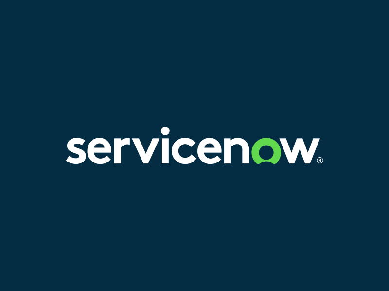

ServiceNow
Artificial Intelligence
View Project →With over 30 years creating digital experiences across platforms, I specialize in design strategy, design systems, and AI-powered solutions.
With experience spanning from innovative design agencies like Fantasy Interactive and Level Studios to transformative tech companies like Unity and ServiceNow, I've shaped digital experiences that millions of users interact with daily.
My collaborative approach bridges the gap between design and engineering, integrating technical feasibility and user needs early in the design process. This methodology enables rapid prototyping of north stars through to the discovery, ideation, definition and validation phases when taking a product from concept to launch from 0 to 1.
My background in Psychology and Anthropology deeply influence my approach to product design. The former provides insights into how users perceive, process, and interact with interfaces, allowing me to create intuitive and user-friendly experiences. While the latter, helps me understand the cultural, social, and behavioral contexts in which users engage with technology, enabling me to design solutions that resonate with their needs, values, and expectations. By combining these perspectives with my expertise in Design Strategy, User Research, Information Architecture, Motion Design, Design Systems, Prototyping, and Front-End Development, I can craft holistic, human-centered solutions that not only address user needs but also align with business objectives, creating meaningful and impactful experiences.
Artificial Intelligence
View Project →Observability
View Project →Ads & Analytics
View Project →Network Visibility Platform
View Project →Community Building in Journalism
View Project →Content Discovery & Retention
View Project →I help organizations align design initiatives with business objectives by developing frameworks, methodologies, and roadmaps that drive innovation and user-centered solutions.
I build and mentor high-performing design teams, establish effective design operations, and create collaborative environments that foster innovation and drive business growth.
I uncover deep user insights through mixed-method research, combining quantitative data with qualitative observations to identify opportunities and validate solutions that drive user satisfaction.
I architect intuitive cohesive experiences by organizing complex information systems, creating clear navigation patterns, and developing taxonomies that enhance findability and user comprehension.
I design seamless user experiences by crafting intuitive interfaces, user flows, and interactive prototypes that balance user needs with business requirements and technical constraints.
I bridge design and development by building responsive interfaces and interactive prototypes using modern web technologies, ensuring pixel-perfect implementation of design systems.
Interested in working together? Feel free to reach out through any of the platforms below.

Led AI research and design teams to build new AI-powered solutions. Created design patterns, research methodologies, and generative AI experiences. Working with the AI product team, I created a framework for designing conversational experiences and helped define the future direction for AI-powered experiences across ServiceNow.
Directed Observability product design across Splunk. Managed frontend teams, led research efforts, and created experiences for monitoring, APM, and RUM. I helped unify the design system and created a more cohesive experience across different Splunk products, significantly improving user satisfaction and reducing learning curves.
Built a design foundation and review processes for research and design while also building out both teams. Created a pattern library for Ads and Analytics teams. I established design processes that brought engineers into the process earlier, leading to better alignment and more feasible solutions from the start.
Designed network visibility and monitoring tools. Developed interactive dashboards for network analysis and security. I created a new visualization system for complex network topologies that helped administrators quickly identify problems and threats, reducing mean time to resolution by 40%.
Building better communities in journalism through open-source tools that help publishers build and maintain relationships with their audiences. I designed moderation tools that reduced the workload for community managers while maintaining high quality standards for discourse.
IA refactor around retention and recommendations to improve user engagement and content discovery. By restructuring the content hierarchy and improving the recommendation algorithm, we increased average session duration by 22% and improved content discovery metrics significantly.